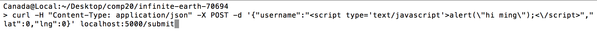
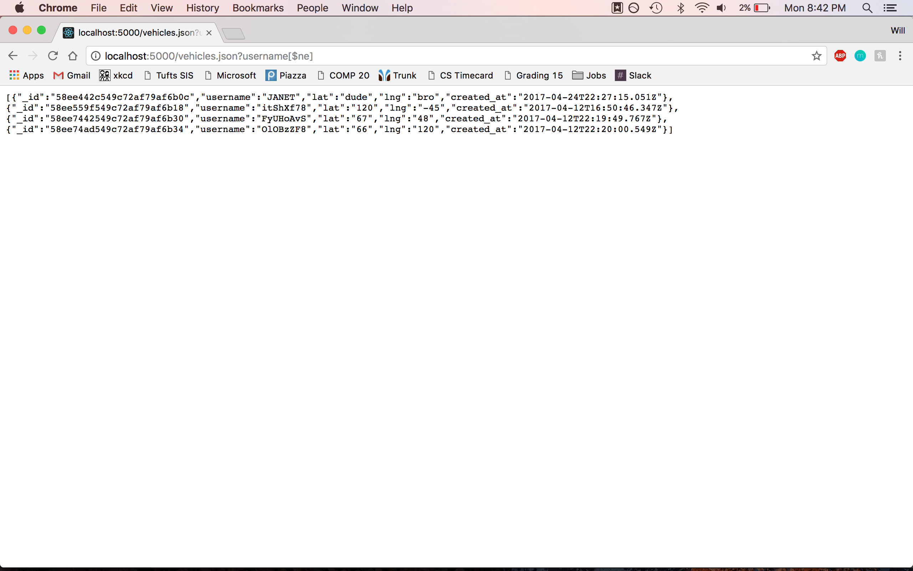
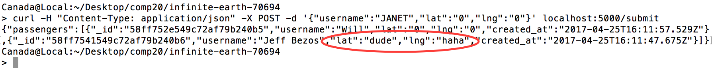
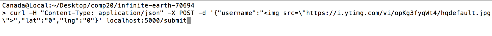
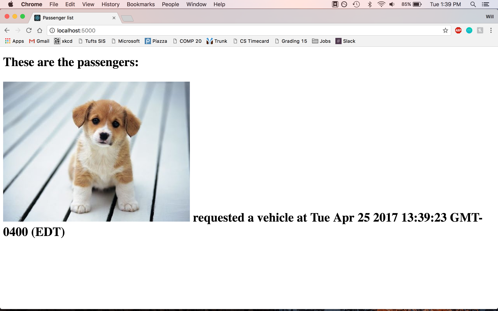

Assignment 4: Security and Privacy Assessment of Client-Side and Server-Side
Introduction
The Black Car Service is a user side application for either drivers or passengers using the service. Drivers post their location data to a central sever and recieve passenger locations to be posted on an interactive map. It uses the Google Maps API to display locations and distances.
The Black Car Server is the back end of this service. It takes requests for posting information to a database, then returns lists of either passengers or drivers based on what type was submitted to the database. The server also has a feature for viewing which passengers have requested vehicles and when. It utilizes a Mongo Database to store information.
I have been tasked with revealing potentional vulnerabilites of both the client and server sides of this application and recommending possible solutions to any issues found.
Methodology
As a start, I black box tested the client's code. I sent various requests to the server containing compromosing commands to try and reveal vulnerabilites such as cross site scripting and input restriction bypassing.
Next, I examined the source code directly to look for possible security lapses, this is known as white box testing. If any issues presented themselves, I then exploited them.
Abstract of Findings
Three Issues were found in the client's code:
- Cross site scripting to access database entries
- Send mongoDB command as username parameter
- Lat and Lng parameters can be set to strings
- HTML Tag Injection
Issues found
-
Cross site scripting to access database entries
Severity - Medium
The first vulnerability found was the ability to inject malicious javascript code using the POST /submit route. When passengers are displayed on the index page, all entries are retrieved from the database and this script is run. I submitted code to alert a message to the browser screen. This can be seen in the popup screenshots. This is a medium level problem because malicious scripts can be run to redirect and change the page contents but not access private data. This could be fixed by removing special characters from user input.

-
Send mongoDB command as username parameter
Severity - High
The next problem was that I was able to send a mongoDB command as a username url query and access all vehicles in the collecton from the
/vehicles.json page. This meant that all data in the collection could be read which presents a high security issue for everything submitted. This could be avoided by stripping special characters from user queries before accessing the database.

-
Lat and Lng parameters can be set to strings
Severity - Medium
The third problem discovered is that the client did not parse user input into floating point numbers for the latitude and longitude parameters. This means that a program using this server would recieve incorrect data and possibly crash. Recommendations are converting lat and lng to floating point numbers and checking if the conversion succeeded before adding to the database. This is medium priority as it would not break everything. As can be seen below, the lat and lng properties are strings.

-
HTML Tag Injection
Severity - Medium
A final flaw is the ability to submit general HTML tags into the client's database so they render on the GET "/" page. To test this I sent an image tag linking to a third party website that rendered a dog picture on the page. This flaw means that this page could be manipulated to display pretty much anything, including a redirect to another page. Fixing this would be the same as the first vulnerability, simply stripping the users input of special characters.


Conclusion
This client's code is functional but has some security and stability errors that make it unsuitable for use without being fixed. Future considerations include testing code for further vulnerabilities, and then writing code to sanitize user input to prevent these attacks. Considering the severity of these problems, I would estimate a full fix of the application and all testing would cost around $800.
References
-
Ming's lectures on security
-
http://blog.websecurify.com/2014/08/hacking-nodejs-and-mongodb.html
-
Dog picture - https://i.ytimg.com/vi/opKg3fyqWt4/hqdefault.jpg